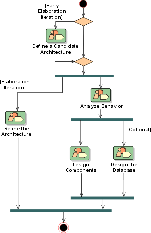

Development Case: Analysis and Design
Discipline 
There are no major changes to the Analysis and Design Discipline - real time design has been removed (see the RUP Overview: Analysis and Design for the full RUP discipline).

Artifacts
| Artifacts | How to use | Review Details | Tools
Used/ Templates/ Examples |
|||
| Incep | Elab | Const | Trans | |||
| Analysis Model *1 | Could | Should | Won't | Won't | Formal- Internal |
Template: Analysis Model |
| Data Model | Could | Must | Must | Must | Formal- Internal |
Template: Data Model |
| Deployment Model | Could | Must | Must | Must | Formal- Internal |
Template: Deployment Model |
| Design Model | Could | Must | Must | Must | Formal- Internal |
Template: Design Model |
| Could | Should | Could | Won't | Informal | ||
| Could | Must | Must | Must | Informal | ||
| Could | Must | Must | Must | Formal- Internal |
||
| Could | Must | Must | Must | Formal- Internal |
||
| Could | Must | Must | Must | Formal- Internal |
||
| Could | Must | Must | Must | Formal- Internal |
||
| Reference Architecture | Could | Could | Could | Could | Formal- External |
Uses SAD template see Template: Software Architecture Document |
| Software Architecture Document (SAD) | Could | Must | Must | Must | Formal- External |
Template: Software Architecture Document |
Notes on the Artifacts
The following RUP artifacts are not used:
| Artifact | How To Use | Clarification |
| Capsule | Won't | Real time systems are not being developed. |
| Event | Won't | Real time systems are not being developed. |
| Protocol | Won't | Real time systems are not being developed. |
| Signal | Won't | Real time systems are not being developed. |
Reports
| Reports | How to Use | Tools Used/ Templates/ Examples |
| Class Report | Could - Casual - a work report | Template- Class Report |
| Design-Model Survey | Should - Use for review purposes as needed. | |
| Design Package / Sub-system | Should - Use for review purposes as needed. | Template- Design Package / Sub-system Report |
| Use-Case Realization | Should - Use for review purposes as needed. | Template- Use-Case Realization Report |
Notes on the Reports
None.
Additional Review Procedures
None.
Other Issues
None.
Configuring The Discipline
When configuring the Analysis and Design Discipline help can be found in:
- RUP Discipline: Environment
- RUP Activity: Develop Development Case
- RUP Guidelines: Important Decisions in Analysis and Design
You should also familiarize yourself with: